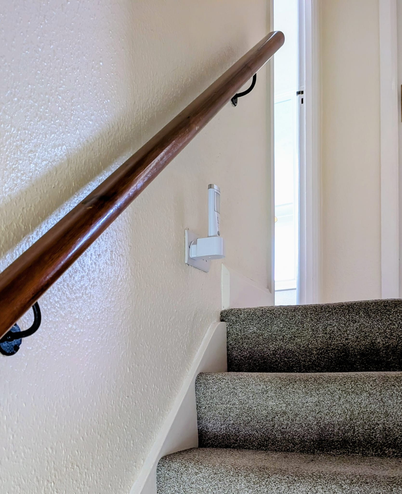

Section 1 — Emergencies
🚨 IN CASE OF FIRE
Leave the property immediately.
Call
999
and ask for the Fire Service.
Fire safety
Smoke, CO and heat detectors are installed and are tested regularly. You can test them yourself by pressing and holding the alarm. All units should sound. Please alert the agent if this is not the case.
If alarms sound please investigate the source. If there is a fire, follow the instructions above.
There is a fire blanket on the wall beside the door in the kitchen.
No smoking, vaping or candles
By law smoking is not allowed in any part of the house. Vaping and candles and naked flames are also banned for safety reasons.
Emergency Lighting

Emergency lighting is provided on the stairs. In the event of a power cut, the light will illuminate automatically. Please leave it plugged in on charge and do not remove the torch except in an emergency.
Medical emergencies
William Harvey Hospital (Ashford) —
01233 633331
Kennington Road, Willesborough, Ashford, Kent, TN24 0LZ
ekhuft.nhs.uk/williamharvey
Well Pharmacy (0.43 mile) —
01797 362997
13 Dunes Road, Greatstone TN28 8SS
Allied Pharmacy —
01797 362180
63 High Street, New Romney
alliedpharmacies.com
The post code of the house is TN28 8NR . For waste & recycling collection dates, see the link in Section 2.
Section 2 — Waste & Recycling
Waste and recycling collections
Domestic waste and recycling collections occur early on Monday morning (often as early as 7.00am in summer) on a fortnightly rota. Food waste is collected weekly.
Please put the relevant bins outside the property boundary on Sunday evening in accordance with the local authority calendar. (displayed in the kitchen).
Use this link for the current collection schedule:
Bin collection schedule (live)
Use this QR code for the current collection schedule.
Which container for what?
Recycling
Glass, plastics, tins, cartons, clean foil
General waste
Non-recycling + plastic bags, cling film
Food waste
Cooked or uncooked (no plastic bags)
Paper & card
Clean paper and cardboard
| Contents | Collected |
|---|---|
| Food waste – cooked or uncooked (no plastic bags or sacks) | Every week |
| Non-recycling – items that cannot go in any other bins including plastic bags and cling film | Non-recycling week (see calendar) |
| Mixed recycling – glass bottles and jars; plastic containers; tins and cans; TetraPak cartons; clean foil | Recycling week (see calendar) |
| Paper and card | Recycling week (see calendar) |
Section 3 — About the House
Emergency isolation points
- The gas can be turned off in the cupboard under the stairs.
- The electricity can be turned off in the lounge cupboard. There are safety trip switches and individual circuit breakers.
- The mains water supply can be turned off in the bathroom; the tap is situated under the removable box to the left of the toilet.
In the event of a problem with the house please contact your letting agent who will do their best to remedy the situation as soon as practical.
Hobbs Parker —
01797 366008
Emergencies —
07881 972456
Keys for the back door, the side door of the games room and the barbeque storage box
(to be found at the back of the games room) are on the stand on the kitchen worktop.
There are also spare window keys on these hooks.
Please close and lock all doors and windows when you leave the property.
Fire safety
The house is equipped with a smoke detector, Carbon Monoxide detector and a fire blanket. The detectors are located in accordance with manufacturers recommendations; the smoke detector above the stairs and the carbon monoxide detector high on the wall in the kitchen close to the door. The fire blanket is on the wall alongside the fridge.
Dishwasher
If you can avoid putting the sharp knives and the non stick pans in the dishwasher we would be grateful. Full instructions are in the appliance guide.
Hot water
All hot water is instant and, apart from the shower, comes from the combination boiler.
Heating
The thermostat in the living room controls the temperature, adjust to suit your needs. To override select “advance” on the boiler in the kitchen. This will turn the heating back on or off as necessary. The boiler will respond immediately but will revert later to the pre-set programmes. Please do not alter any other settings on the boiler.
Phone / tablet charging
There are USB charging outlets in the power socket to the left of the front window in the lounge.
Detailed appliance instructions are in the blue folder titled “Purley Dene – Appliance Guide” .
Barbecue
Enjoy the barbecue but please leave it clean and tidy.
- Dispose of used coals and ash in the metal bin.
- Spare charcoal, lighting fluid, utensils, cleaning brush etc. are stored with the fire-tray and grill in the green and brown storage box on the patio. For safety reasons please keep this locked. The key to the padlock can be found with the house keys.
Section 4 — Things to Do
Games room
We hope you and your family enjoy our games room. We store the darts and snooker balls on the high shelf, out of reach of small children. Please ensure they are returned to the same place.
Books
Please feel free to browse the “library” and exchange any of the paperbacks with your own.
Fibre Internet (Wi‑Fi)
Fast internet is provided. Wi‑Fi connection network information is displayed on the Wi‑Fi repeaters, including a QR code to help you connect.
If you are unable to connect try restarting both the router and your device.
Shopping
There is a local supermarket just a few minutes walk away in Coast Drive. There is a Co-op in Littlestone Road and a Sainsbury in New Romney.
New Romney High Street is where you will also find a small library and a good mixture of shops.
Television
The TV provides access to free UK TV and streaming services.
Out and About
There are many local attractions.
You might find something of interest in the leaflets in the lounge.
Tides and the Beach
The beach directly behind the house is sandy at low tide and ideal for walking and sandcastles. As the tide comes in, the sand is gradually covered the sea often reaching the shingle.
If you are planning time on the sand, we recommend checking the local high-water time. High water at Greatstone is a few minutes after high water Dungeness.
The tide times at Greatstone are only a few minutes later than tides at Dungeness.
View live tide times (BBC)
The tide times at Greatstone are only a few minutes later than tides at Dungeness.
Scan this QR code for live tide times (BBC).
Romney, Hythe & Dymchurch Railway
The Romney, Hythe & Dymchurch Railway is a unique miniature steam railway and well worth a visit. Littlestone Road station is convenient and makes a good starting point.
Trains run to Dungeness (including the Old Lighthouse), Dymchurch and Hythe.
Eating Out
The Ship Inn in New Romney offers good, traditional pub food. There are several restaurants in New Romney, as well as a popular Greek restaurant in Greatstone.
Indian and Chinese takeaways are also available locally.
Days Out
There are excellent days out within easy reach, including the castles at Bodiam and Dover, the picturesque town of Rye, and the increasingly quirky seaside town of Folkestone.
For shopping, the designer outlet stores at Ashford are also popular.
Walks and the Marsh
The Romney Marsh offers delightful walks, quiet lanes and traditional country pubs. From the house you can walk along the beach, through the dunes or along the sea wall.
From the front of the house there are also walks through woodland and across fields towards New Romney.